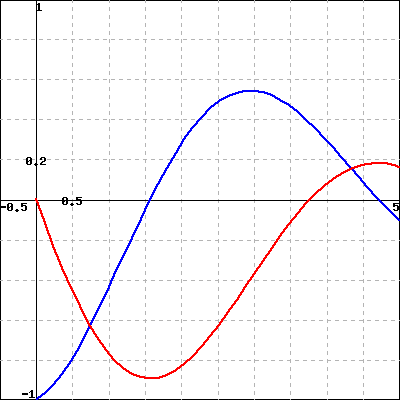

We encounter sequences every day. Your monthly utility payments, the annual interest you earn on investments, the amount you spend on groceries each week; all are examples of sequences. Other sequences with which you may be familiar include the Fibonacci sequence \(1, 1, 2, 3, 5, 8, \ldots \text{,}\) where each term is the sum of the two preceding terms, and the triangular numbers \(1, 3, 6, 10, 15, 21, 28, 36, 45, 55, \ldots \text{,}\) the number of vertices in the triangles shown in Figure 8.1.1.
Figure8.1.1.Triangular numbers
Sequences of integers are of such interest to mathematicians and others that they have a journal 1 devoted to them and an on-line encyclopedia 2 that catalogs a huge number of integer sequences and their connections. Sequences are also used in digital recordings and images.
Our studies in calculus have dealt with continuous functions. Sequences model discrete instead of continuous information. We will study ways to represent and work with discrete information in this chapter as we investigate sequences and series, and ultimately see key connections between the discrete and continuous.
Preview Activity8.1.1.
Suppose you receive \(\dollar5000\) through an inheritance. You decide to invest this money into a fund that pays \(8\%\) annually, compounded monthly. That means that each month your investment earns \(\frac{0.08}{12} \cdot P\) additional dollars, where \(P\) is your principal balance at the start of the month. So in the first month your investment earns
or \(\dollar33.33\text{.}\) If you reinvest this money, you will then have \(\dollar5033.33\) in your account at the end of the first month. From this point on, assume that you reinvest all of the interest you earn.
How much interest will you earn in the second month? How much money will you have in your account at the end of the second month?
Complete Table 8.1.2 to determine the interest earned and total amount of money in this investment each month for one year.
Table8.1.2.Interest
Month
Interest earned
Total amount of money in the account
\(0\)
\(\dollar0.00\)
\(\dollar5000.00\)
\(1\)
\(\dollar33.33\)
\(\dollar5033.33\)
\(2\)
\(3\)
\(4\)
\(5\)
\(6\)
\(7\)
\(8\)
\(9\)
\(10\)
\(11\)
\(12\)
As we will see later, the amount of money \(P_n\) in the account after month \(n\) is given by
Use this formula to check your calculations in Table 8.1.2. Then find the amount of money in the account after 5 years.
How many years will it be before the account has doubled in value to $10000?
Subsection8.1.1Sequences
As Preview Activity 8.1.1 illustrates, many discrete phenomena can be represented as lists of numbers (like the amount of money in an account over a period of months). We call any such list a sequence. A sequence is nothing more than list of terms in some order. We often list the entries of the sequence with subscripts,
where the subscript denotes the position of the entry in the sequence.
Definition8.1.3.
A sequence is a list of terms \(s_1, s_2, s_3, \ldots\) in a specified order.
We can think of a sequence as a function \(f\) whose domain is the set of positive integers where \(f(n) = s_n\) for each positive integer \(n\text{.}\) This alternative view will be be useful in many situations.
by \(\{s_n\}\text{.}\) The value \(s_n\) (alternatively \(s(n)\)) is called the \(n\)th term in the sequence. If the terms are all 0 after some fixed value of \(n\text{,}\) we say the sequence is finite. Otherwise the sequence is infinite. With infinite sequences, we are often interested in their end behavior and the idea of convergent sequences.
Activity8.1.2.
Let \(s_n\) be the \(n\)th term in the sequence \(1, 2, 3, \ldots\text{.}\) Find a formula for \(s_n\) and use appropriate technological tools to draw a graph of entries in this sequence by plotting points of the form \((n,s_n)\) for some values of \(n\text{.}\) Most graphing calculators can plot sequences; directions follow for the TI-84.
In the MODEmenu, highlight SEQin the FUNCline and press ENTER.
In the Y=menu, you will now see lines to enter sequences. Enter a value for nMin (where the sequence starts), a function for u(n) (the \(n\)th term in the sequence), and the value of u(nMin).
Set your window coordinates (this involves choosing limits for \(n\) as well as the window coordinates XMin, XMax, YMin, and YMax.
The GRAPHkey will draw a plot of your sequence.
Using your knowledge of limits of continuous functions as \(x \to \infty\text{,}\) decide if this sequence \(\{s_n\}\) has a limit as \(n \to \infty\text{.}\) Explain your reasoning.
Let \(s_n\) be the \(n\)th term in the sequence \(1, \frac{1}{2}, \frac{1}{3}, \ldots\text{.}\) Find a formula for \(s_n\text{.}\) Draw a graph of some points in this sequence. Using your knowledge of limits of continuous functions as \(x \to \infty\text{,}\) decide if this sequence \(\{s_n\}\) has a limit as \(n \to \infty\text{.}\) Explain your reasoning.
Let \(s_n\) be the \(n\)th term in the sequence \(2, \frac{3}{2}, \frac{4}{3}, \frac{5}{4}, \ldots\text{.}\) Find a formula for \(s_n\text{.}\) Using your knowledge of limits of continuous functions as \(x \to \infty\text{,}\) decide if this sequence \(\{s_n\}\) has a limit as \(n \to \infty\text{.}\) Explain your reasoning.
Recall our earlier work with limits involving infinity in Section 2.8. State clearly what it means for a continuous function \(f\) to have a limit \(L\) as \(x \to \infty\text{.}\)
Given that an infinite sequence of real numbers is a function from the integers to the real numbers, apply the idea from part (a) to explain what you think it means for a sequence \(\{s_n\}\) to have a limit as \(n \to \infty\text{.}\)
Based on your response to the part (b), decide if the sequence \(\left\{ \frac{1+n}{2+n}\right\}\) has a limit as \(n \to \infty\text{.}\) If so, what is the limit? If not, why not?
In Activities 8.1.2 and 8.1.3 we investigated a sequence \(\{s_n\}\) that has a limit as \(n\) goes to infinity. More formally, we make the following definition.
Definition8.1.4.
A sequence \(\{ s_n \}\) converges or is a convergent sequence provided that there is a number \(L\) such that we can make \(s_n\) as close to \(L\) as we want by taking \(n\) sufficiently large. In this situation, we call \(L\) the limit of the convergent sequence and write
If the sequence \(\{s_n\}\) does not converge, we say that the sequence \(\{s_n\}\) diverges.
The idea of sequence having a limit as \(n \to \infty\) is the same as the idea of a continuous function having a limit as \(x \to \infty\text{.}\) The only difference is that sequences are discrete instead of continuous.
Activity8.1.4.
Use graphical and/or algebraic methods to determine whether each of the following sequences converges or diverges.
\(\left\{\frac{10^n}{n!}\right\}\) (where \(!\) is the factorial symbol and \(n! = n(n-1)(n-2) \cdots (2)(1)\) for any positive integer \(n\) (as convention we define \(0!\) to be 1)).
Subsection8.1.2Summary
A sequence is a list of objects in a specified order. We will typically work with sequences of real numbers. We can think of a sequence as a function from the positive integers to the set of real numbers.
A sequence \(\{s_n\}\) of real numbers converges to a number \(L\) if we can make every value of \(s_k\) for \(k \ge n\) as close as we want to \(L\) by choosing \(n\) sufficiently large.
A sequence diverges if it does not converge.
Exercises8.1.3Exercises
1.Limits of five sequences.
In this problem, use the general expressions for left and right sums,
\begin{equation*}
\mbox{left-hand sum} = f(t_0)\Delta t + f(t_1)\Delta t + \cdots +
f(t_{n-1})\Delta t
\end{equation*}
and
\begin{equation*}
\mbox{right-hand sum} = f(t_1)\Delta t + f(t_2)\Delta t + \cdots +
f(t_{n})\Delta t,
\end{equation*}
and the following table:
\(t\)
0
2
4
6
8
\(f(t)\)
36
34
31
30
28
A. If we use \(n = 4\) subdivisions, fill in the values:
C. If we use \(n = 2\) subdivisions, fill in the values:
\(\Delta t =\)
\(t_0 =\) ; \(t_1 =\) ; \(t_2 =\)
\(f(t_0) =\) ; \(f(t_1) =\) ; \(f(t_2) =\)
D. Find the left and right sums using \(n = 2\)
left sum =
right sum =
2.Formula for a sequence, given first terms.
On a sketch of \(y = e^{x}\text{,}\) represent the left Riemann sum with \(n = 2\) approximating \(\int_{2}^{3}\,e^{x}\,dx\text{.}\) Write out the terms of the sum, but do not evaluate it:
Sum = +
On another sketch, represent the right Riemann sum with \(n = 2\) approximating \(\int_{2}^{3}\,e^{x}\,dx\text{.}\) Write out the terms of the sum, but do not evaluate it:
Sum = +
Which sum is an overestimate?
the right Riemann sum
the left Riemann sum
neither sum
Which sum is an underestimate?
the left Riemann sum
the right Riemann sum
neither sum
3.Divergent or convergent sequences.
Suppose \(\displaystyle f(x) = \frac{13}{x}\)
(a) The rectangles in the graph on above illustrate a left endpoint Riemann sum for \(f(x)\) on the interval \(2 \leq x \leq 4\text{.}\) The value of this left endpoint Riemann sum is , and it is an
overestimate of
equal to
underestimate of
there is ambiguity
the area of the region enclosed by \(\displaystyle y = f(x)\text{,}\) the x-axis, and the vertical lines \(x = 2\) and \(x = 4\text{.}\)

(b) The rectangles in the graph above illustrate a right endpoint Riemann sum for \(f(x)\) on the interval \(2 \leq x \leq 4\text{.}\) The value of this right endpoint Riemann sum is , and it is an
overestimate of
equal to
underestimate of
there is ambiguity
the area of the region enclosed by \(\displaystyle y = f(x)\text{,}\) the x-axis, and the vertical lines \(x = 2\) and \(x = 4\text{.}\)
4.Terms of a sequence from sampling a signal.
The rate (in liters per minute) at which water drains from a tank is recorded at half-minute intervals. Use the average of the left- and right-endpoint approximations to estimate the total amount of water drained during the first 3 min.
\(t\) min
0
0.5
1
1.5
2
2.5
3
rate in l/min
48
46
44
42
40
38
36
Answer: liters.
5.
Finding limits of convergent sequences can be a challenge. However, there is a useful tool we can adapt from our study of limits of continuous functions at infinity to use to find limits of sequences. We illustrate in this exercise with the example of the sequence
Draw the graph of \(f(x)\) on the interval \([0,10]\) and then plot the entries of the sequence on the graph. What conclusion do you think we can draw about the sequence \(\left\{\frac{\ln(n)}{n}\right\}\) if \(\lim_{x \to \infty} f(x) = L\text{?}\) Explain.
Note that \(f(x)\) has the indeterminate form \(\frac{\infty}{\infty}\) as \(x\) goes to infinity. What idea from differential calculus can we use to calculate \(\lim_{x \to \infty} f(x)\text{?}\) Use this method to find \(\lim_{x \to \infty} f(x)\text{.}\) What, then, is \(\lim_{n \to \infty} \frac{\ln(n)}{n}\text{?}\)
6.
We return to the example begun in Preview Activity 8.1.1 to see how to derive the formula for the amount of money in an account at a given time. We do this in a general setting. Suppose you invest \(P\) dollars (called the principal) in an account paying \(r\%\) interest compounded monthly. In the first month you will receive \(\frac{r}{12}\) (here \(r\) is in decimal form; e.g., if we have \(8\%\) interest, we write \(\frac{0.08}{12}\)) of the principal \(P\) in interest, so you earn
dollars in interest. Assume that you reinvest all interest. Then at the end of the first month your account will contain the original principal \(P\) plus the interest, or a total of
Given that your principal is now \(P_1\) dollars, how much interest will you earn in the second month? If \(P_2\) is the total amount of money in your account at the end of the second month, explain why
Find a formula for \(P_3\text{,}\) the total amount of money in the account at the end of the third month in terms of the original investment \(P\text{.}\)
There is a pattern to these calculations. Let \(P_n\) the total amount of money in the account at the end of the third month in terms of the original investment \(P\text{.}\) Find a formula for \(P_n\text{.}\)
7.
Sequences have many applications in mathematics and the sciences. In a recent paper 3 the authors write
The incretin hormone glucagon-like peptide-1 (GLP-1) is capable of ameliorating glucose-dependent insulin secretion in subjects with diabetes. However, its very short half-life (1.5-5 min) in plasma represents a major limitation for its use in the clinical setting.
The half-life of GLP-1 is the time it takes for half of the hormone to decay in its medium. For this exercise, assume the half-life of GLP-1 is 5 minutes. So if \(A\) is the amount of GLP-1 in plasma at some time \(t\text{,}\) then only \(\frac{A}{2}\) of the hormone will be present after \(t+5\) minutes. Suppose \(A_0 = 100\) grams of the hormone are initially present in plasma.
Let \(A_1\) be the amount of GLP-1 present after 5 minutes. Find the value of \(A_1\text{.}\)
Let \(A_2\) be the amount of GLP-1 present after 10 minutes. Find the value of \(A_2\text{.}\)
Let \(A_3\) be the amount of GLP-1 present after 15 minutes. Find the value of \(A_3\text{.}\)
Let \(A_4\) be the amount of GLP-1 present after 20 minutes. Find the value of \(A_4\text{.}\)
Let \(A_n\) be the amount of GLP-1 present after \(5n\) minutes. Find a formula for \(A_n\text{.}\)
Does the sequence \(\{A_n\}\) converge or diverge? If the sequence converges, find its limit and explain why this value makes sense in the context of this problem.
Determine the number of minutes it takes until the amount of GLP-1 in plasma is 1 gram.
8.
Continuous data is the basis for analog information, like music stored on old cassette tapes or vinyl records. A digital signal like on a CD or MP3 file is obtained by sampling an analog signal at some regular time interval and storing that information. For example, the sampling rate of a compact disk is 44,100 samples per second. So a digital recording is only an approximation of the actual analog information. Digital information can be manipulated in many useful ways that allow for, among other things, noisy signals to be cleaned up and large collections of information to be compressed and stored in much smaller space. While we won’t investigate these techniques in this chapter, this exercise is intended to give an idea of the importance of discrete (digital) techniques.
Let \(f\) be the continuous function defined by \(f(x) = \sin(4x)\) on the interval \([0,10]\text{.}\) A graph of \(f\) is shown in Figure 8.1.5.
Figure8.1.5.The graph of \(f(x) = \sin(4x)\) on the interval \([0,10]\)
We approximate \(f\) by sampling, that is by partitioning the interval \([0,10]\) into uniform subintervals and recording the values of \(f\) at the endpoints.
Ineffective sampling can lead to several problems in reproducing the original signal. As an example, partition the interval \([0,10]\) into 8 equal length subintervals and create a list of points (the sample) using the endpoints of each subinterval. Plot your sample on graph of \(f\) in Figure Figure 8.1.5. What can you say about the period of your sample as compared to the period of the original function?
The sampling rate is the number of samples of a signal taken per second. As the part (a) illustrates, sampling at too small a rate can cause serious problems with reproducing the original signal (this problem of inefficient sampling leading to an inaccurate approximation is called aliasing). There is an elegant theorem called the Nyquist-Shannon Sampling Theorem that says that human perception is limited, which allows that replacement of a continuous signal with a digital one without any perceived loss of information. This theorem also provides the lowest rate at which a signal can be sampled (called the Nyquist rate) without such a loss of information. The theorem states that we should sample at double the maximum desired frequency so that every cycle of the original signal will be sampled at at least two points. Recall that the frequency of a sinusoidal function is the reciprocal of the period. Identify the frequency of the function \(f\) and determine the number of partitions of the interval \([0,10]\) that give us the Nyquist rate.
Humans cannot typically pick up signals above 20 kHz. Explain why, then, that information on a compact disk is sampled at 44,100 Hz.